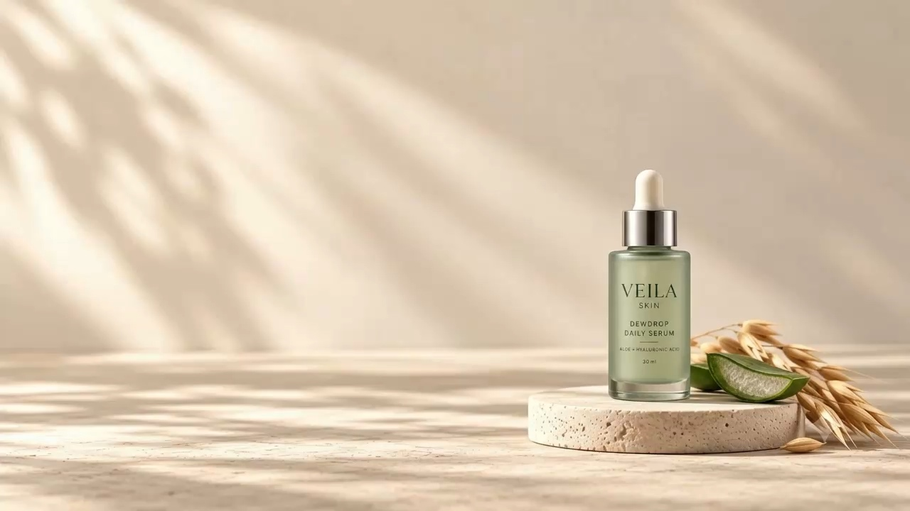
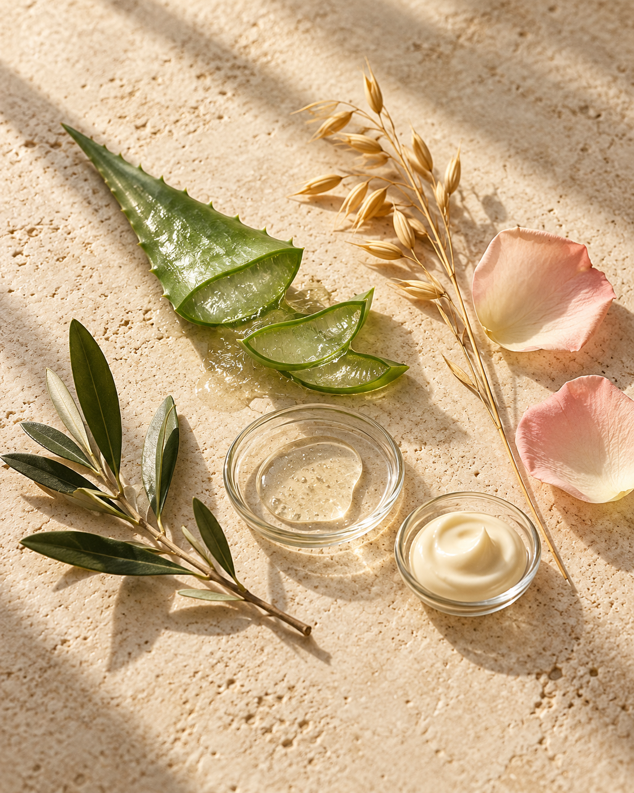
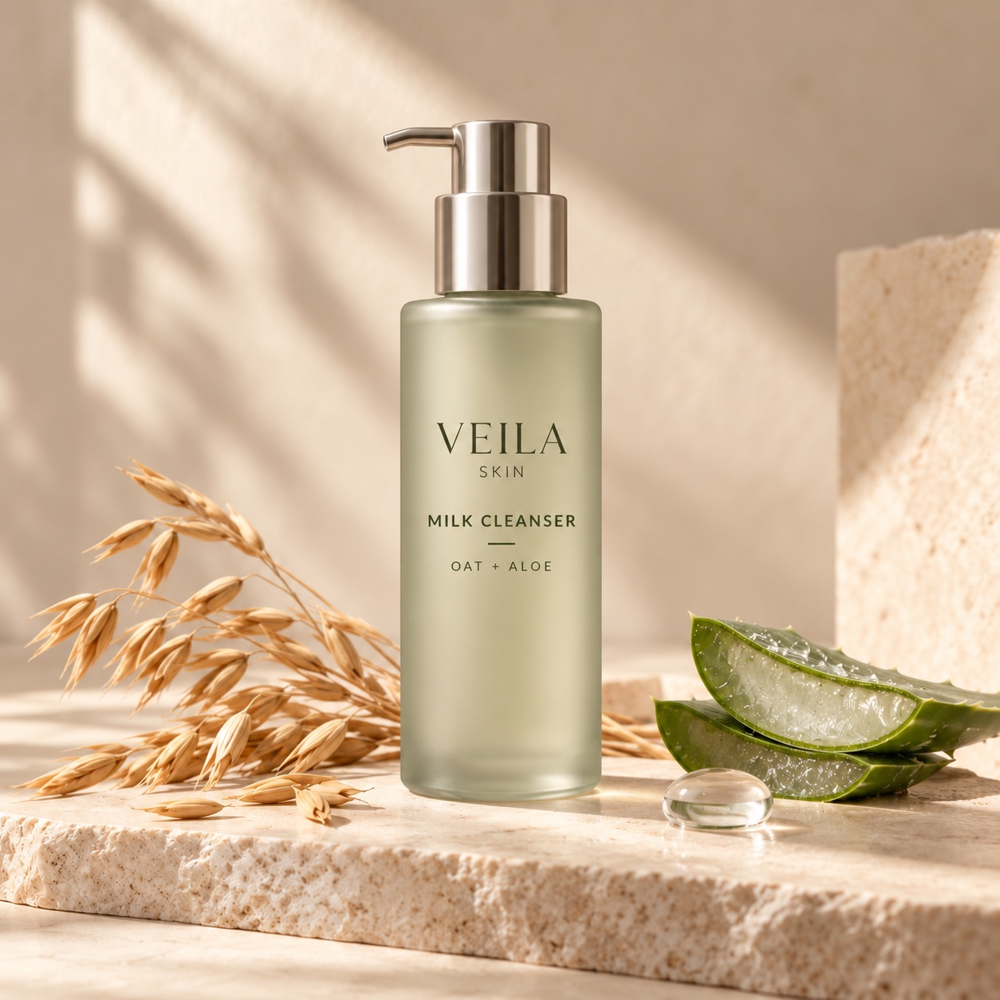
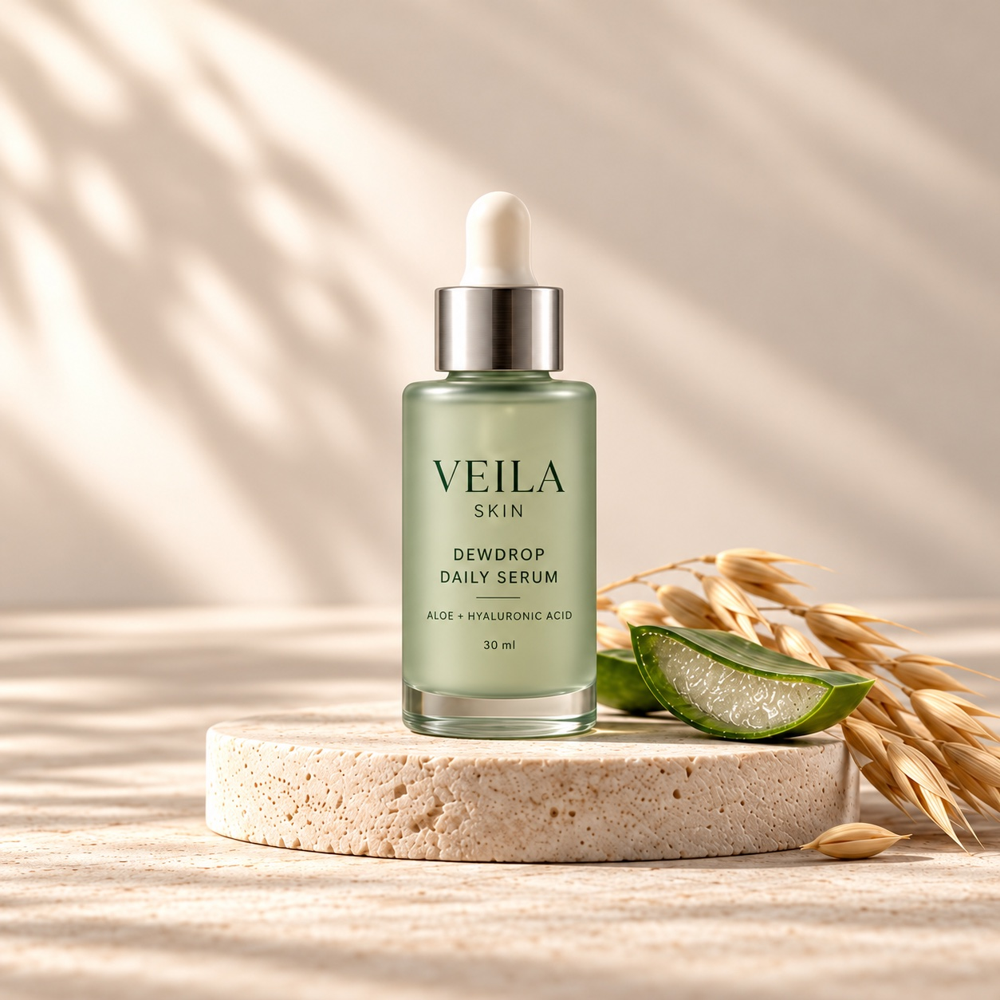
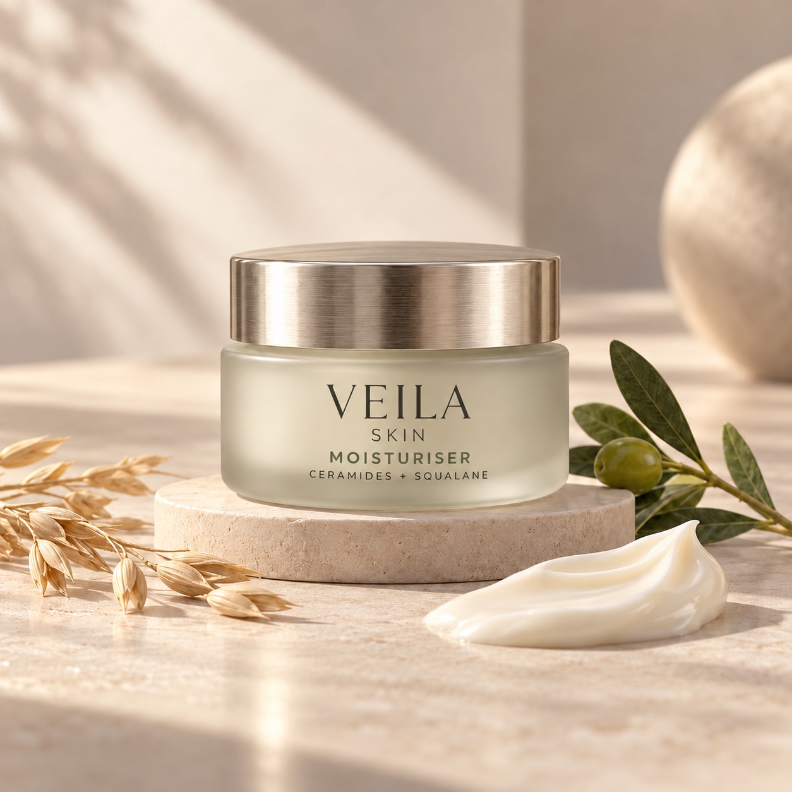

Ingredients, explained.
Explore each product’s proposed ingredient story, with plain-language notes and no mystery blends.
Meet the ingredients ↗
Aloe, oat and hyaluronic acid. Discover the ingredient story behind our signature Dewdrop Daily Serum.
The Veila collection
From your first cleanse to your final layer. Discover face, sun, lip and body care, all with a little Veila softness.
A first look at Veila. Product names, formulas, packaging and prices are concepts for this preview. Shopping is a demo; no orders or payments are taken.
The Veila ingredient edit
Botanical textures. Familiar skincare ingredients. A closer look at the ideas behind every little ritual.

A moisture-binding ingredient commonly used in hydrating skincare. Clear serum droplets illustrate its place in our Dewdrop concept.
An ingredient used in lightweight moisturising skincare. Aloe is part of the proposed direction for our serum and milky cleanser.
Oat inspires our cleanser, serum and body care. Its final ingredient form is still being selected; colloidal oatmeal is a specific form used in soothing skincare.
A humectant used to attract moisture. A proposed ingredient in our cleanser, toner, body care and several other Veila essentials.
Lipids used in moisturisers to support the skin barrier. Part of the proposed direction for Soft Veil and Rice Cloud.
An emollient oil used in moisturising skincare. Proposed for Soft Veil and Moonlit; the olive imagery is illustrative, not a sourcing claim.
Provitamin B5 is found in moisturising skincare. It features in the proposed ingredient stories for Meadow Dew and Dew Petal.
A butter used in moisturising products. It inspires the rich texture direction of our lip balm and body lotion.
These notes describe common ingredient uses, not tested results for Veila. Our formulas are in development; final ingredients, concentrations and suitability are not confirmed.
The ingredient atelier
Meet the textures and botanical ideas behind the collection. Choose a product, then explore each ingredient note.
PROPOSED INGREDIENT STORY



Less rushing. More ritual. Get to know the three essentials at the heart of our first collection.
The way we see care
Veila began with a simple idea: your skincare routine can be a moment you look forward to. Thoughtful textures, quiet design, and space to make a ritual of your own.
The Veila approach
You deserve to understand what you’re choosing. Here’s how we present our first collection.
A few thoughtful details ↗Explore each product’s proposed ingredient story, with plain-language notes and no mystery blends.
Meet the ingredients ↗Texture, size and routine placement sit beside each product, so the collection is easier to understand.
Explore the daily ritual ↗Veila is a brand concept in development. Final formulas and testing come before product claims; shopping is a preview for now.
About this collection ↗About the collection
Get to know our ingredients, our collection and where we are today.
Meet the collectionMeet our Daily Ritual: Cloud Milk Cleanser, Dewdrop Daily Serum and Soft Veil Moisturiser. Each product has its own texture and a place in the collection, from the first cleanse to the final layer.
Explore the daily ritualEvery product has an ingredient story. Explore the key ingredients, learn why they appear in skincare, and see which Veila products they’re proposed for. Complete ingredient lists will accompany the finished formulas.
Read the ingredient editNot just yet. We’re developing our first collection. For now, you can explore the products and put together a preview bag. Checkout is not open, and the prices shown are illustrative.
We’ll share delivery locations, shipping costs and return terms before orders open, so you can read the details before deciding to buy. These policies haven’t been finalised yet.